פשוט להצליח במתמטיקה › כל הנושאים › מרובעים וקטע אמצעים
מרובעים וקטע אמצעים – סרטוני הסבר ותרגול
35 סרטוני הסבר ותרגול בנושא מרובעים וקטע אמצעים – לכיתה ט׳, שאלון 471, שאלון 571. כל נושא מוסבר מהקל אל הקשה: קודם הרעיון, אחר כך תרגילים, ובסוף שאלות בסגנון בגרות. הכול בחינם, בשיטת "פשוט להצליח".
רוצים לעקוב אחרי ההתקדמות?נרשמים בחינם, וכל סרטון שראיתם מסומן ✓. ממשיכים מכל מכשיר.
הצטרפות בחינם ←מרובעים וקטע אמצעים – כיתה ט׳ כל הנושאים של כיתה ט׳ ←
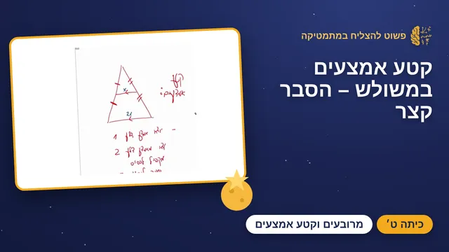
קטע אמצעים במשולש – הסבר קצר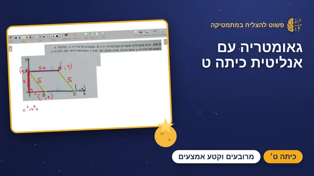
גאומטריה עם אנליטית כיתה ט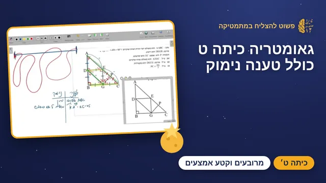
גאומטריה כיתה ט כולל טענה נימוק גאומטריה כיתה ט תרגיל טיל
גאומטריה כיתה ט תרגיל טיל גאומטריה כיתה ט תרגיל מדהים
גאומטריה כיתה ט תרגיל מדהים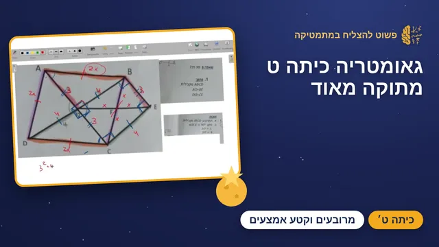
גאומטריה כיתה ט מתוקה מאוד מעוין כיתה ט גאומטריה לפתור נכון את החיים
מעוין כיתה ט גאומטריה לפתור נכון את החיים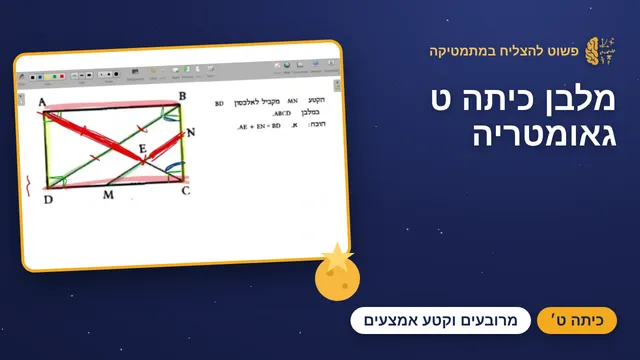
מלבן כיתה ט גאומטריה קטע אמצעים בטרפז תרגילים ל5 יח כיתה ט המטורפים 4
קטע אמצעים בטרפז תרגילים ל5 יח כיתה ט המטורפים 4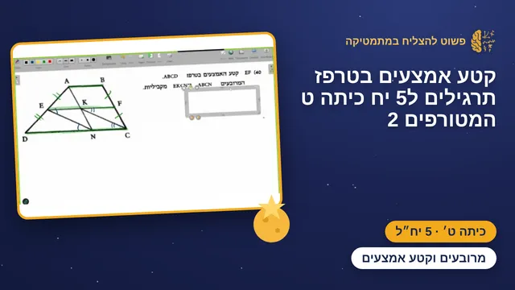
קטע אמצעים בטרפז תרגילים ל5 יח כיתה ט המטורפים 2 קטע אמצעים בטרפז תרגילים ל5 יח כיתה ט המטורפים 3
קטע אמצעים בטרפז תרגילים ל5 יח כיתה ט המטורפים 3 קטע אמצעים בטרפז תרגילים ל5 יח כיתה ט המטורפים
קטע אמצעים בטרפז תרגילים ל5 יח כיתה ט המטורפים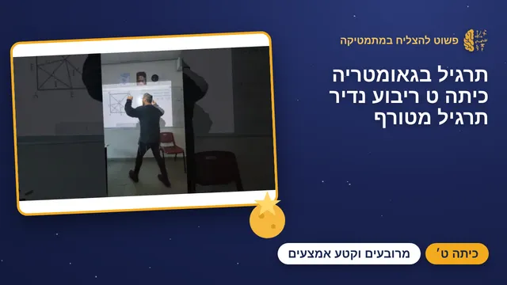
תרגיל בגאומטריה כיתה ט ריבוע נדיר תרגיל מטורף תרגילי גאומטריה מדהימים כיתה ט 5 יח 4
תרגילי גאומטריה מדהימים כיתה ט 5 יח 4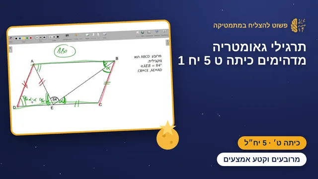
תרגילי גאומטריה מדהימים כיתה ט 5 יח 1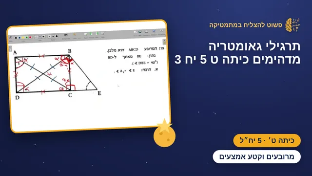
תרגילי גאומטריה מדהימים כיתה ט 5 יח 3 תרגילי גאומטריה מדהימים כיתה ט 5 יח 7
תרגילי גאומטריה מדהימים כיתה ט 5 יח 7 תרגילי גאומטריה מדהימים כיתה ט 5 יח 2
תרגילי גאומטריה מדהימים כיתה ט 5 יח 2 תרגילי גאומטריה מדהימים כיתה ט 5 יח 6
תרגילי גאומטריה מדהימים כיתה ט 5 יח 6 תרגילי גאומטריה מדהימים כיתה ט 5 יח 5
תרגילי גאומטריה מדהימים כיתה ט 5 יח 5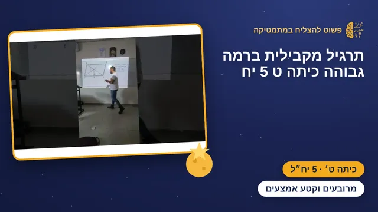
תרגיל מקבילית ברמה גבוהה כיתה ט 5 יח תרגיל מקבילית כיתה ט 5 יח נדיר ביותר
תרגיל מקבילית כיתה ט 5 יח נדיר ביותר הסבר על מהות מקבילית, תכונות ואיך מוכיחים כיתה ט 5 יח
הסבר על מהות מקבילית, תכונות ואיך מוכיחים כיתה ט 5 יח תרגיל בגאומטריה קטע אמצעים כיתה ט 5 יח
תרגיל בגאומטריה קטע אמצעים כיתה ט 5 יח קטע אמצעים תרגיל נדיר ביותר כיתה ט
קטע אמצעים תרגיל נדיר ביותר כיתה ט הסבר קטע אמצעים כיתה ט נדיר ביותר
הסבר קטע אמצעים כיתה ט נדיר ביותר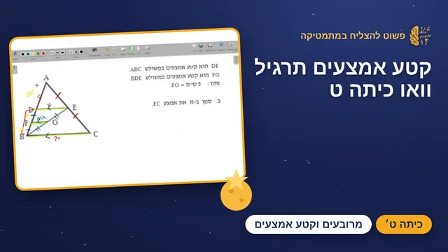
קטע אמצעים תרגיל וואו כיתה ט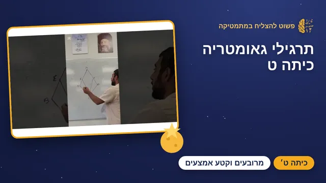
תרגילי גאומטריה כיתה ט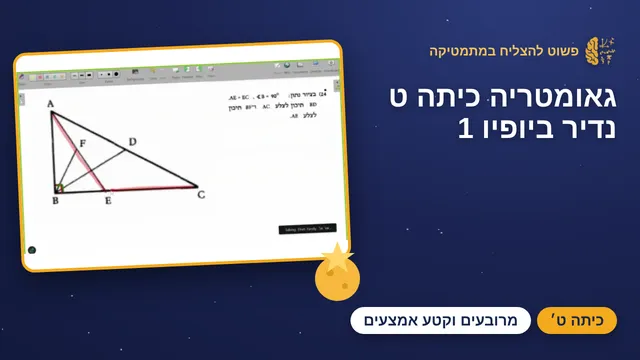
גאומטריה כיתה ט נדיר ביופיו 1 גאומטריה כיתה ט נדיר ביופיו 2תרגיל גאומטריה – דלתון כיתה ט, כולל משולש שווה שוקיים
גאומטריה כיתה ט נדיר ביופיו 2תרגיל גאומטריה – דלתון כיתה ט, כולל משולש שווה שוקיים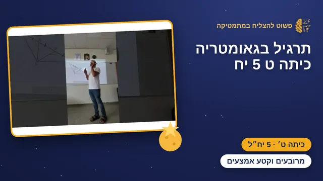
תרגיל בגאומטריה כיתה ט 5 יח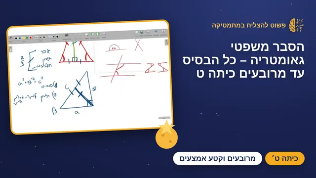
הסבר משפטי גאומטריה – כל הבסיס עד מרובעים כיתה טגאומטריה – קטע אמצעים גאומטריה – מקבילית
גאומטריה – מקביליתמרובעים וקטע אמצעים – שאלון 471 כל הנושאים של שאלון 471 ←
מרובעים וקטע אמצעים – שאלון 571 כל הנושאים של שאלון 571 ←
קטע אמצעים בטרפז תרגילים ל5 יח כיתה ט המטורפים 4קטע אמצעים בטרפז תרגילים ל5 יח כיתה ט המטורפים 2קטע אמצעים בטרפז תרגילים ל5 יח כיתה ט המטורפים 3קטע אמצעים בטרפז תרגילים ל5 יח כיתה ט המטורפיםתרגילי גאומטריה מדהימים כיתה ט 5 יח 4תרגילי גאומטריה מדהימים כיתה ט 5 יח 1תרגילי גאומטריה מדהימים כיתה ט 5 יח 3תרגילי גאומטריה מדהימים כיתה ט 5 יח 7תרגילי גאומטריה מדהימים כיתה ט 5 יח 2תרגילי גאומטריה מדהימים כיתה ט 5 יח 6תרגילי גאומטריה מדהימים כיתה ט 5 יח 5תרגיל מקבילית ברמה גבוהה כיתה ט 5 יחתרגיל מקבילית כיתה ט 5 יח נדיר ביותרהסבר על מהות מקבילית, תכונות ואיך מוכיחים כיתה ט 5 יחתרגיל בגאומטריה קטע אמצעים כיתה ט 5 יחתרגיל בגאומטריה כיתה ט 5 יחגאומטריה – קטע אמצעיםגאומטריה – מקבילית